杨翔 · 人因工程博士研究者、产品与交互设计实践者。关注人在高负荷、复杂决策和智能系统中的感知、信任与行动。
从完整产品与研究实践，到聚焦单一问题的工具，再到面向未来情境的概念探索。
这里不按技术栈陈列，而按项目成熟度和阅读方式分组。每个项目都说明我的角色、公开边界和当前可验证入口。
完整的产品、平台与研究实践。每个项目独立展开一页。
围绕一个明确断裂点构建的轻量、可交互工具。
用可视化和交互原型探索尚未被充分定义的未来情境。
帮助人先看清自己已经知道什么，再找到紧挨着认知边界、值得继续追问的问题。
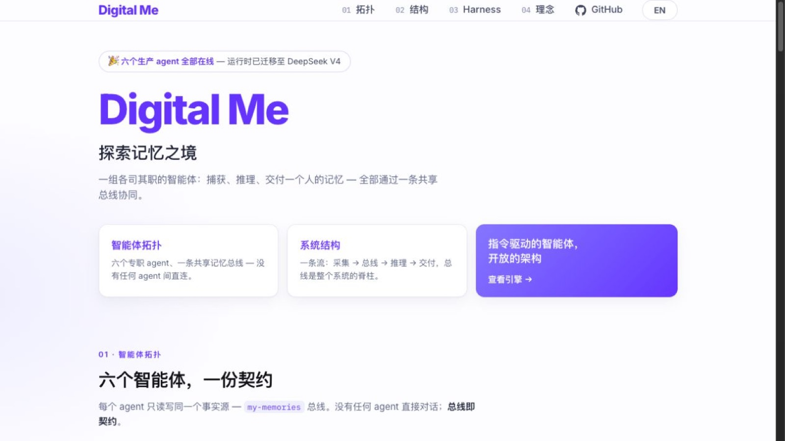
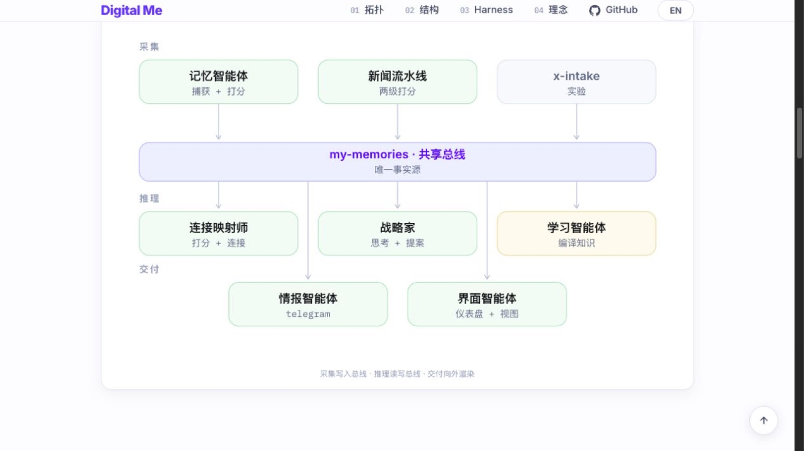
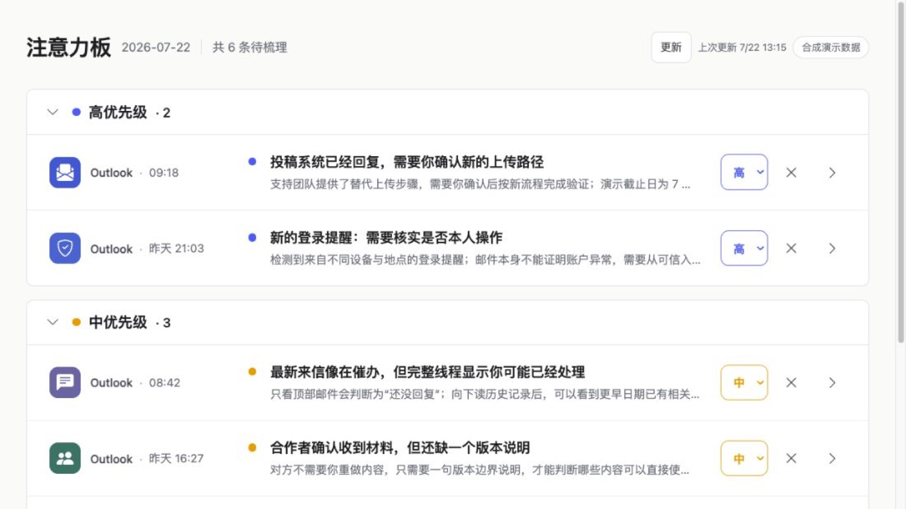
公开网站展示问题框架、系统结构和合成界面；更完整的个人运行面保持私有。
查看公开项目 ↗在不引入沉重账户体系的前提下，为本地社区建立足够的身份连续性、信任与联系方式交换。
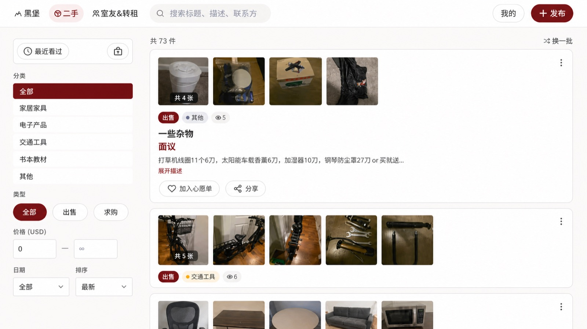
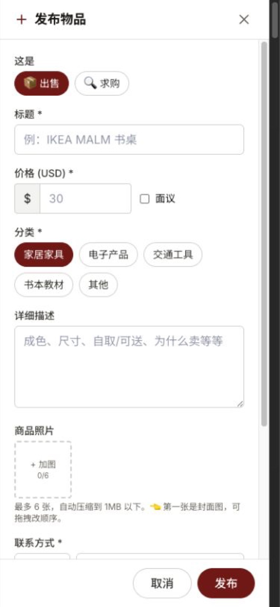
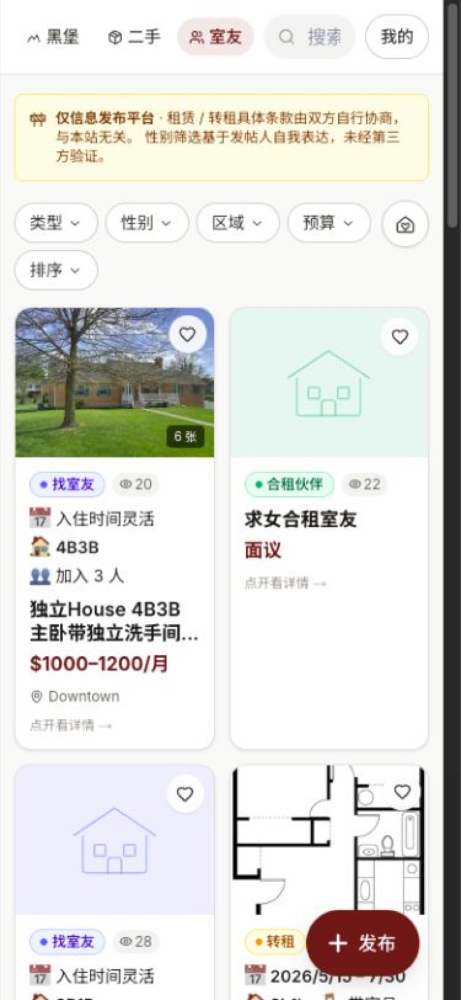
首页图根据真实页面重新排版并脱敏；其余功能图来自公开站点。
访问网站 ↗探索在视觉或听觉负荷很高时，有限的触觉通道如何清楚表达方向与紧迫度。
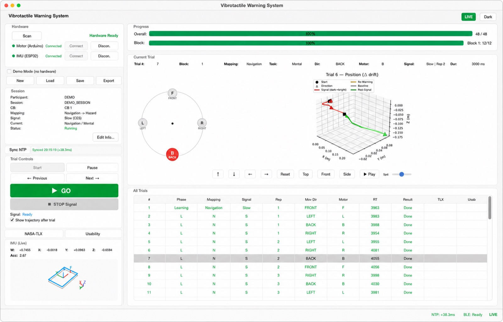
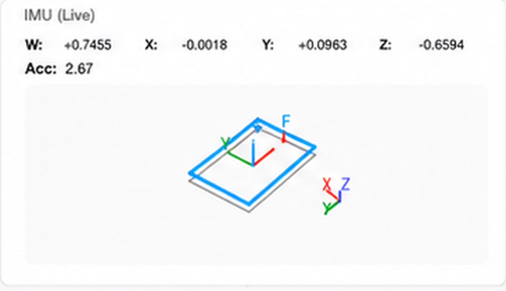
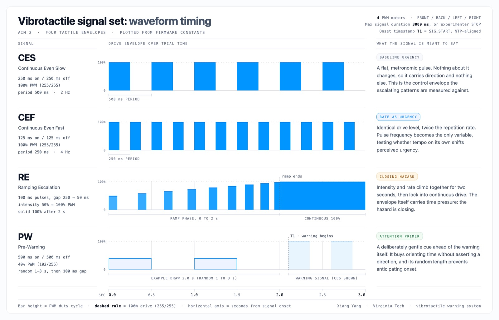
平台连接可穿戴触觉阵列、实验控制、双时间戳和 IMU 数据采集。
网站查看完整图集 ↗把工人端情境输入、实时定位与管理端工区划定、风险可视化和事件复盘连接成双角色流程。
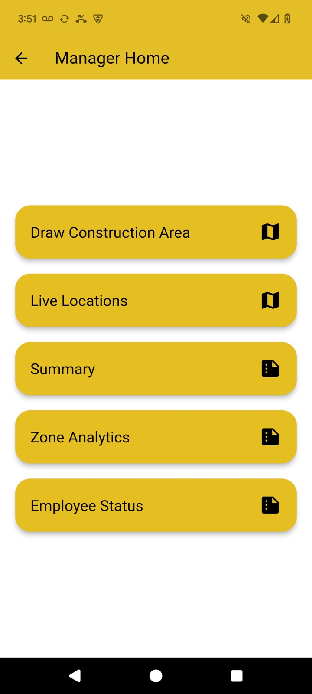
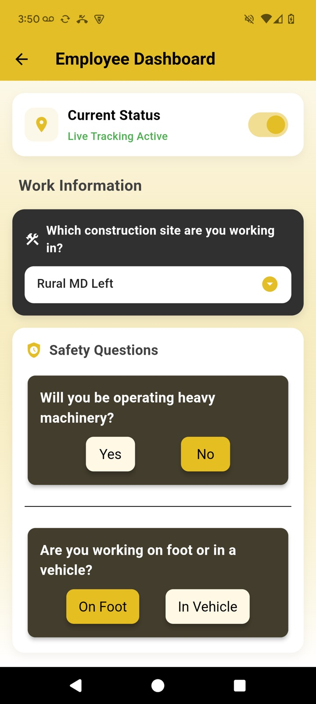
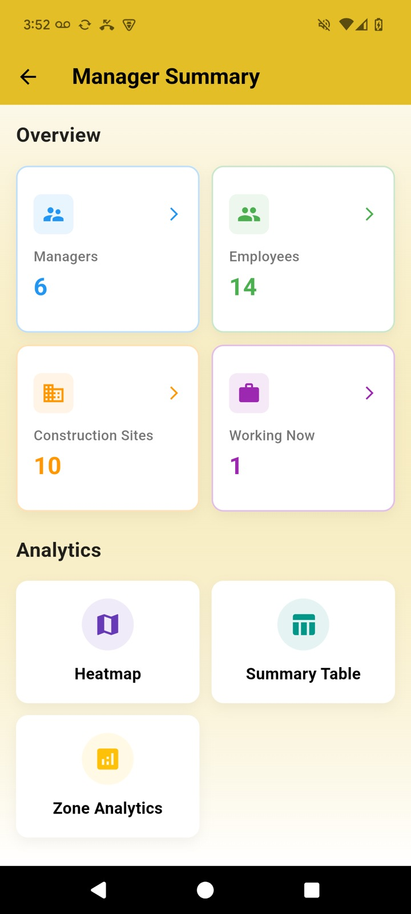
每个工具只解决一个明确断裂点，并保留可验证的使用入口或角色边界。
四个项目统一为相同阅读尺度：一张界面、一句话价值、一个当前状态。
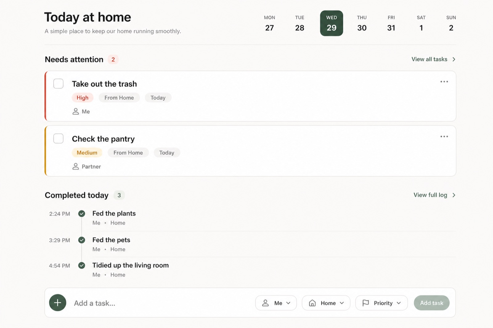
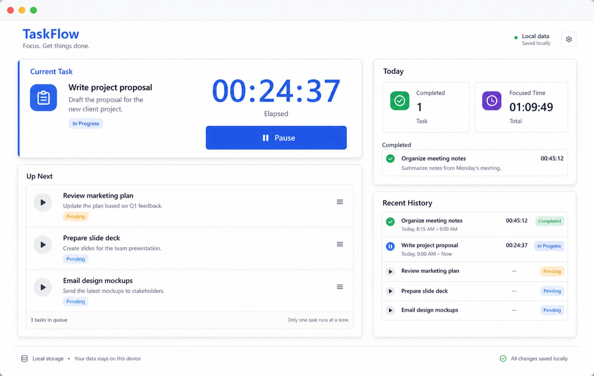
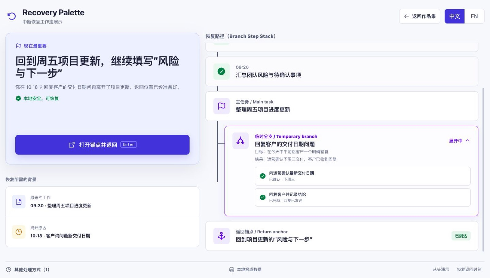
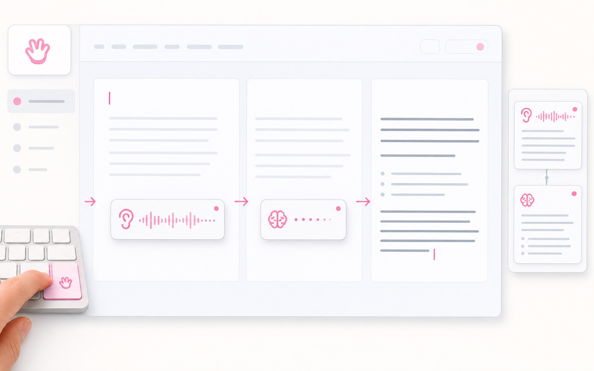
把一个事件放进合成城市，观察不同人物如何重新理解它，以及这些理解如何改变选择、关系与后续影响。
我关注的不是给界面增加更多功能，而是让复杂系统在关键时刻更容易被理解、信任和正确使用。
PDF 用于快速理解项目结构；网站用于继续深入具体界面与当前可用入口。
xiangyang.work ↗